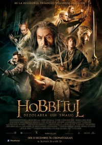
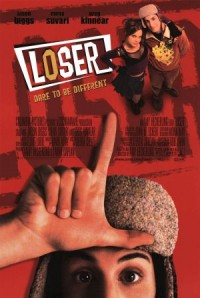
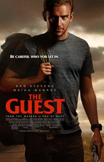
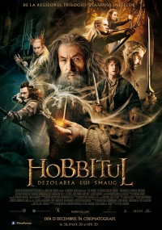
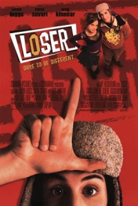
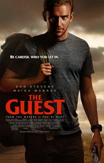

Dawn of the Dead 2004
După ce termină o tură lungă ca asistentă, Ana (Sarah Polley) se întoarce în cartierul unde locuieşte împreună cu soţul ei, Luis. Prinşi într-o întâlnire târzie, ei ratează un buletin de ştiri de urgenţă. A doua zi dimineaţa, un copil din cartier pătrunde peste ei î casă şi îl ucide pe Luis, care se transformă imediat într-un zombie şi o atacă pe Ana. ...

Freedom Writers - Jurnalul străzii (2007)
Regizorul Richard LaGravenese ne aduce în prim-plan proiectul „The Freedom Writer’s Diaries: How a Teacher and 150 Teens Used Writing to Change Themselves and the World Around Them”, scris de profesoara Erin Gruwell, împreună cu elevii ei. Ceea ce încep să scrie elevii „periculoşi”este o odisee împotriva ignoranţei, a neînţelegerii şi a forţelor negative din propriile vieţi, ce le va deschide ochii şi-i va învăţa să devină eroii propriilor vieţi.
Freedom Writers - Jurnalul străzii (2007)
Începând cu NIKITA și LEON, și până la AL CINCILEA ELEMENT, scenaristul și regizorul Luc Besson a creat unele din cele mai dure și mai memorabile eroine de acțiune din istoria cinematografului.
Acum, Besson ne-o prezintă pe Scarlett Johansson în LUCY, un thriller de acțiune despre o femeie care e prinsă accidental într-o afacere periculoasă care se întoarce împotriva celor care au răpit-o și care o transformă într-o mașinărie de luptă nemiloasă, evoluată dincolo de puterea de înțelegere omenească.
Abonare la recomandari filme
Aboneaza-te la newsletter si vei primi cele mai noi articole direct pe emai